High-stakes leadership offsites in Barcelona.
When fast growth slows your decisions, we take your leadership team out of the office to settle the hard calls and leave with a signed 90-day compact.Facilitated in English · Deutsch · Français · Português · Español
Urban ateliers, Norrsken House, and walkable Mediterranean lofts in Poblenou.
Historic winery estates, walking debate trails, and private sunset catamaran sails.
500-year-old secluded stone properties near Girona for deep, zero-distraction retreats.
Trusted by operators who’ve built at
What breaks when fast-growing companies hit pressure in the AI era
When fast-growing scale-ups stall, the point of failure is no longer code, tools, or AI models, it is leadership alignment. In remote-first companies, AI creates an illusion of velocity while unspoken C-suite friction quietly delays critical decisions. Without physical proximity, teams avoid hard commercial trade-offs, hiding behind polite Slack messages while the board waits for decisive execution.
Source: Noam Wasserman, Harvard Business School
Decisions take weeks
AI and remote tools produce work in seconds. The calls on ownership, budget and priorities still take weeks of polite Slack threads.
Hard trade-offs get avoided
Over Zoom, leaders agree in the meeting and disagree afterwards. The tension shows up as silent approvals and teams defending their own turf.
Offsites that fade by Monday
Most retreats produce a good mood and a long list. Without named owners and review dates, little changes once everyone is back at their desk.
Before, in the room and the 90 days after
One sequence across all three engagement models. How deep we go at each step depends on the track you choose.
Before
6 to 10 weeks aheadWe agree the outcomes and agenda with you and take venue and logistics off your team. On the Operator and Deep Intervention tracks we also survey or interview each attendee, so the real tensions are on the table from the first hour.
In the room
2, 3 or 5 days · Barcelona and CataloniaClosed-door working sessions on the decisions your team has been postponing: priorities, trade-offs and who owns what. Evenings are built for trust, around a shared table, a walk or a sail.
The 90 days after
Back at workYour team runs the compact, on one page your board can read. On the Deep Intervention track we come back at 30 and 60 days to review what held and what slipped.
On the Deep Intervention track: how tension gets handled
-
01
Confidential 1:1s
We interview every attendee before arrival, under NDA.
-
02
A tension map without names
The interviews become patterns, so issues are discussed as system problems and nobody is singled out.
-
03
Closed-room mediation
A partner moderates the hard trade-offs and the team agrees who decides what.
-
04
A signed 90-day compact
Owners, what stops and review dates, signed before anyone leaves.
Calibrate by cohort & mandate
Select the room size and operational scope required. Choose a format below to inspect the full curriculum, facilitation architecture, and deliverables.
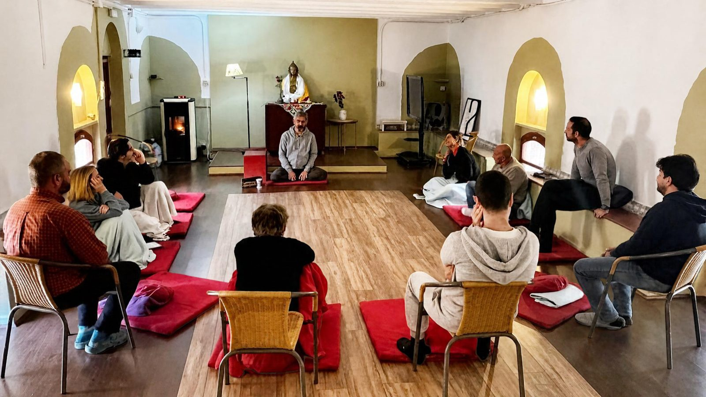
The Horizon & Founder Reset
2–6 co-founders / executive committee
- Uncertainty Labs & 3–5 year scenario modelling
- Founder cognitive load & stamina diagnostics
- 500-year secluded stone masia estate buyout
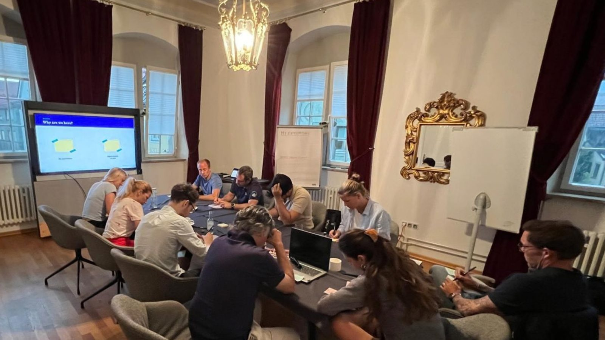
Strategy-to-Execution Offsite
5–14 C-suite & functional leaders
- Confidential 1:1 stakeholder friction matrix
- Single-threaded RACI & decision rights compact
- Binding 90-day operational roadmap lock-in
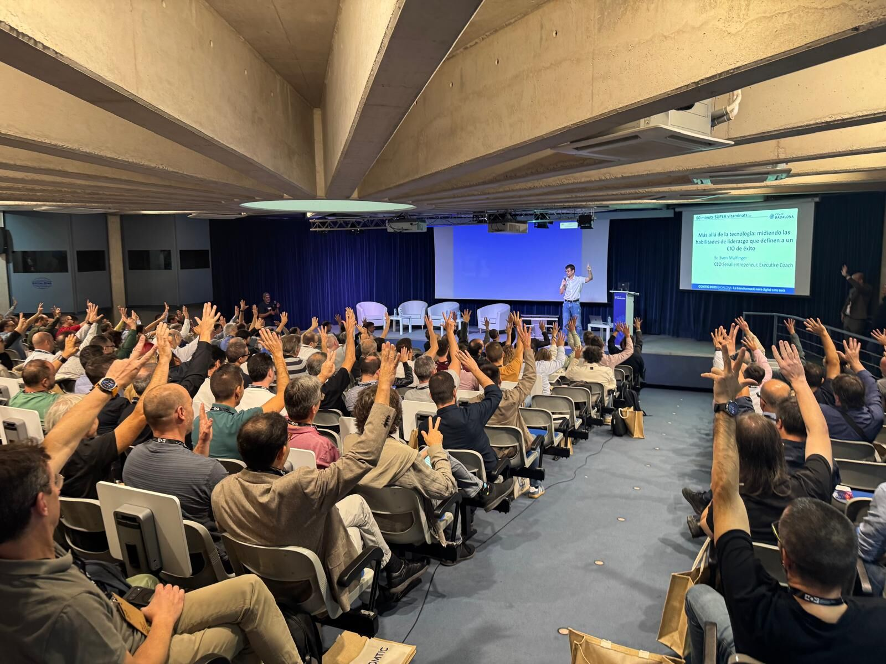
Company Momentum Offsite
15–100+ cross-functional team
- Dual-track plenary vision with sprint pods
- Turnkey private estate, stage AV & logistics
- Open-hearth dining & private catamaran sail
The Horizon & Founder Reset (2–6 co-founders / ExCo)
Stepping out of the day-to-day operational whirlwind to preserve founder stamina and stress-test the company roadmap against radical market shifts.
Strategic focus & curriculum
- 3–5 Year Horizon Labs: Stress-testing the underlying business thesis against disruptive AI advancement and market compression before forced pivots occur.
- Executive Stamina & Self-Preservation: Confidential diagnostics on personal cognitive load, founder burnout, and operational stamina.
- Relational Reset: Unfiltered mediation of unexpressed founder tensions, equity expectations, and high-growth communication habits.
Facilitation & environment
- In-Room Lead: Dedicated CEO-to-CEO facilitator, Dr. Sven Mulfinger or Luisa Ábalo, with deep multi-stakeholder mediation credentials.
- Venue Standard: Complete private buyout of a 500-year-old stone masia near Girona, with zero outside interruptions or non-cohort guests.
- Primary Output: A clear co-founder compact, a refreshed multi-year strategic compass, and rebalanced executive workloads.
Strategy-to-Execution Offsite (5–14 C-suite & functional leaders)
Dismantling inter-departmental friction, establishing absolute clarity on decision rights, and translating board priorities into an executable 90-day plan.
Diagnostic intake & governance
- 1:1 Stakeholder Intake: Pre-offsite interviews with every C-suite attendee, building an anonymized, confidential Leadership Friction Matrix. How the mediation works →
- RACI & Decision Rights Compact: Eliminating inter-departmental drag and turf wars by codifying explicit single-threaded ownership.
- Strategic Roadmapping: Stress-testing product and go-to-market trade-offs against annual board commitments and runway targets.
In-room dynamic & delivery
- In-Room Lead: A principal operator pair moderating high-tempo plenary debate while driving rapid breakout alignment.
- Venue Standard: A secluded estate in Penedès or Girona, with private chef dining, sommelier masterclasses, and audio-secure breakout rooms.
- Primary Output: The 90-Day Execution Compact, a signed governance roadmap with concrete metrics, ready for deployment Monday morning. How the compact works →
Company Momentum Offsite (15–100+ cross-functional team)
Uniting distributed and remote-first teams around high-level vision while executing high-tempo sprint breakouts and shared social anchors.
Dual-track architecture
- Plenary Alignment: High-energy, whole-company vision sessions designed to anchor remote-first and distributed teams in shared purpose.
- Functional Breakout Pods: Specialised engineering, product, and commercial sprint sessions steered by Kuma’s senior operator bench.
- Turnkey Ownership: Zero burden on internal People teams: end-to-end transport, hotel blocks, stage AV, and private catering, managed completely.
Social anchors & venues
- Venues: Poblenou Creative Atelier, Norrsken House Barcelona’s plenary theatre, or private seaside campus buyouts.
- Catalan Immersions: Open-fire hearth group dining in private estate courtyards, and sunset catamaran sails departing Port Vell.
- Primary Output: Cross-functional velocity, cultural realignment, and completed sprint roadmaps owned across departments. Read the company offsite guide →
Configure your offsite
Five questions. One tailored blueprint, reviewed personally by Sven, Farid or Luisa within 24 business hours.
Fixed facilitation fee
One fixed fee covering intake, agenda design, in-room facilitation and the post-offsite review cadence.
Passed through at cost
Venue buyout, private dining, ground logistics and experiences such as a sunset catamaran are billed at cost, with no agency markup.
Most engagements land between €15,000 and €150,000, depending on cohort size and venue.
Choose your cadence
Select the operational depth required. Open any cadence below to inspect a sample day-by-day agenda.
The Surgical Sprint
48 hours · high-intensity alignment
Focused, closed-room mediation to unblock critical bottlenecks, resolve executive friction, and secure immediate decision rights.
Ratified RACI matrix, unblocked decision rights, and operational green lights.
The Complete Intervention
72 hours · strategic and experiential depth
The reference standard: deep strategic debate paired with secluded Catalan social anchors to restore cross-functional trust.
The signed 90-day compact, a re-aligned commercial roadmap, and rebuilt team trust.
The Transformational Reset
Full week · comprehensive organisational reset
Complete immersion for distributed leadership teams, uniting company-wide vision with functional sprint execution.
A full operating-system overhaul, department sprint charters, and a unified culture.
The Surgical Sprint (two-day cadence)
- Pre-arrival friction-matrix diagnostic
- Two 4-hour closed-room plenary sessions
- Facilitator-steered working dinner
Diagnostics & Friction Matrix
-
08:30
Conditions of Success
The room explicitly defines what “done” looks like by the close of Day 2.
-
10:00
Plenary Session 1: Friction Matrix
The anonymized intake map goes on the table, naming departmental turf wars directly.
-
13:00
Working Terrace Lunch
Light Mediterranean lunch outdoors on the estate terrace.
-
14:30
Plenary Session 2: Acute Mediation
Operator-guided arbitration on structural and resource bottlenecks surfaced in the morning.
-
20:00
Steered Executive Dinner
Facilitated evening reflection over local gastronomy, avoiding casual small talk.
Mediation & compact lock-in
-
08:30
Plenary Session 3: Decision Rights
Single-threaded RACI assignment and resolving critical capital and headcount trade-offs.
-
11:30
Working Execution Roadmap
Translating breakout agreements into prioritised milestones for Monday morning.
-
13:00
Informal Working Lunch
Sub-team alignment and final dependency checks.
-
14:30
The 90-Day Compact Ratification
Formal signature of single-threaded accountability commitments before leaving the room.
-
18:00
Cohort Departure
Private coordinated transport back to Barcelona–El Prat or central lofts.
The Complete Intervention (three-day cadence)
- Friction-matrix review & roadmap stress-test
- Open-hearth masia dinner & wine pairing
- Signed 90-day compact & catamaran debrief
Strategic alignment
-
09:00
CEO Vision & Framework
Setting the bar for radical candor and framing the stakes everyone carries.
-
10:30
Leadership Friction Matrix
Intake findings and unexpressed departmental turf wars tabled directly.
-
14:00
Vineyard Terrace Lunch
Outdoor gastronomy in the Catalan estate grounds.
-
15:30
Commercial & Product Labs
Stress-testing the 12-month roadmap against market realities and AI shifts.
-
20:00
Open-Hearth Dinner
Courtyard fire cooking with private sommelier wine tasting.
Governance & immersion
-
08:30
Governance Sprint
Dismantling silos and establishing single-threaded RACI ownership.
-
12:30
Light Coastal Lunch
Briefing before the midday maritime transition.
-
13:30
Chartered Catamaran Debrief
Private sail departing Port Vell for phone-free executive reflection on open water.
-
17:30
Coastal Decompression
Informal debrief outside boardroom walls.
-
20:30
Private Chef Tasting
Unstructured time left intentionally open on the agenda.
Compact & departure
-
09:00
Executive Synthesis
Converting previous breakthrough debates into definitive operating metrics.
-
11:30
Pod Commitment Alignment
Functional leads ratify cross-team dependencies and SLAs.
-
14:00
Compact Ratification
Formal signing of the 90-day governance compact and board commitments.
-
16:30
Closing Retrospective
Personal executive commitments declared out loud to the room.
-
18:00
Departure
Private transfers arranged to airport or city hotels.
The Transformational Reset (five-day cadence)
- Parallel executive & functional sprint tracks
- Product & AI governance roadmap lab
- Multi-day private estate buyout
Strategy & Horizon Labs
-
D1 09:00
Urban Vision Kickoff
All-hands vision alignment at Poblenou Creative Atelier or Norrsken House.
-
D1 20:00
Catalan Evening Welcome
Tapas and informal connection in El Born before countryside relocation.
-
D2 09:30
Business Model & Horizon Labs
Runway, AI tooling, and unit economics stress-tested, then transfer to the mountain estate.
Leadership & immersion
-
09:00
Leadership Calibration
Founder stamina diagnostics, burnout check, and team communication compacts.
-
13:00
Catalan Trail or Maritime Sail
A guided catamaran sail or a hike across the Montserrat foothills, chosen ahead of arrival.
-
20:00
Mid-Week Hearth Feast
An open-fire courtyard feast across the full cohort.
Execution & roadmaps
-
D4 09:00
Dual-Track Pod Sprints
Engineering, product, and go-to-market breakouts steered by Kuma’s senior bench.
-
D5 10:00
Charter Ratification
Cross-functional commitments presented and the operating compact locked in.
-
D5 17:00
Closing Retrospective & Departure
Full cohort debrief, with private transport to the airport at 18:00.
Three places to go
Physical environments curated specifically for strategic focus, creative friction, or team connection.
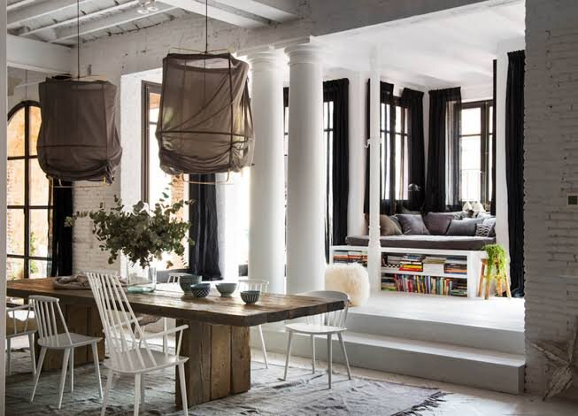
Setting: Urban Innovation Atelier & Poblenou Loft / Norrsken House overlooking the sea.
Dynamic, walkable creative hub. Designed for cross-functional company offsites, product roadmap hackathons, and high-energy distributed team reunions.
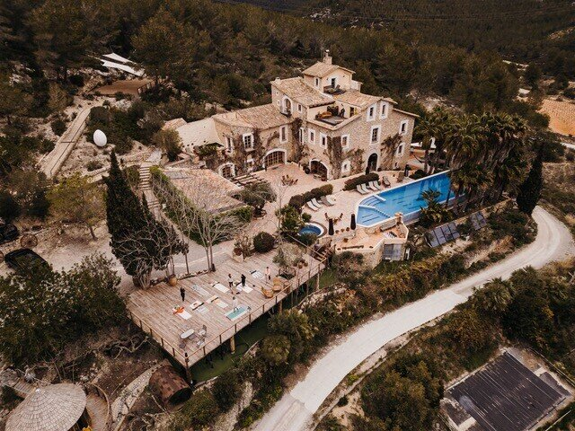
Setting: Secluded 500-year-old historic countryside estate (Solsona / Costa Brava).
High-privacy retreat surrounded by quiet nature, with zero urban distractions. Ideal for high-stakes C-suite strategy-to-execution mediation and co-founder resets.
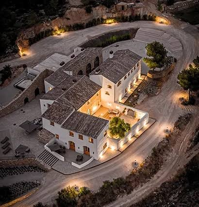
Setting: Penedès wine region estate & coastal hills near Sitges.
The perfect midpoint between deep focus and sensory immersion. Designed for executive committees wanting strategic debates by day and world-class wine gastronomy by dusk.
Calibrated decompression. Zero forced fun.
High-stakes debate requires psychological safety. We replace generic corporate team-building exercises with sophisticated Catalan social anchors designed to lower executive guards, break down functional silos, and build genuine relational trust.
Open-fire hearth & sommelier masterclass
Gather around the fire with a dedicated private chef. Leadership teams step away from slides to prepare authentic Mediterranean dishes, paired with biodynamic Catalan wines. Informal cooking breaks down hierarchy faster than any slide deck.
Private Mediterranean catamaran debrief
Conclude an intense day of C-suite debate by taking the entire executive cohort onto open water from Port Vell. Phone-free conversations against the Barcelona skyline allow strategic concepts to settle into intuitive consensus.
Terroir trails & walking plenaries
Some of the hardest commercial knots are untied while moving. We integrate structured pair-walking sessions through Penedès vineyard rows and secluded Montserrat mountain trails, turning physical rhythm into unblocked strategic clarity.
Three ways to work with us
From self-directed execution to fully turnkey operator moderation.
You decide, we facilitate
How it works: You set the strategic agenda and internal working topics. We provide the curated venue (Atelier, Masia, or Vineyard), manage 100% of the on-ground logistics, and supply targeted workshop facilitation only where needed.
Best for: teams with a strong internal facilitator or People Lead who simply want the planning burden removed.
Co-created strategy
How it works: We conduct a lightweight pre-offsite survey to surface team tensions. Together, we co-design the strategic schedule, alternating between your internal company presentations and operator-led alignment workshops.
Best for: fast-scaling teams needing experienced external steering to keep discussions on track.
Full diagnostic & preparation
How it works: End-to-end intervention. We lead confidential 1:1 stakeholder discovery interviews prior to arrival, draft the Leadership Friction Matrix, moderate the hard closed-room debates, and deliver a signed 90-day binding governance compact with quarterly follow-up reviews.
Best for: C-suites facing acute decision drag, co-founder friction, or post-fundraise governance bottlenecks.
Inside the Barcelona experience
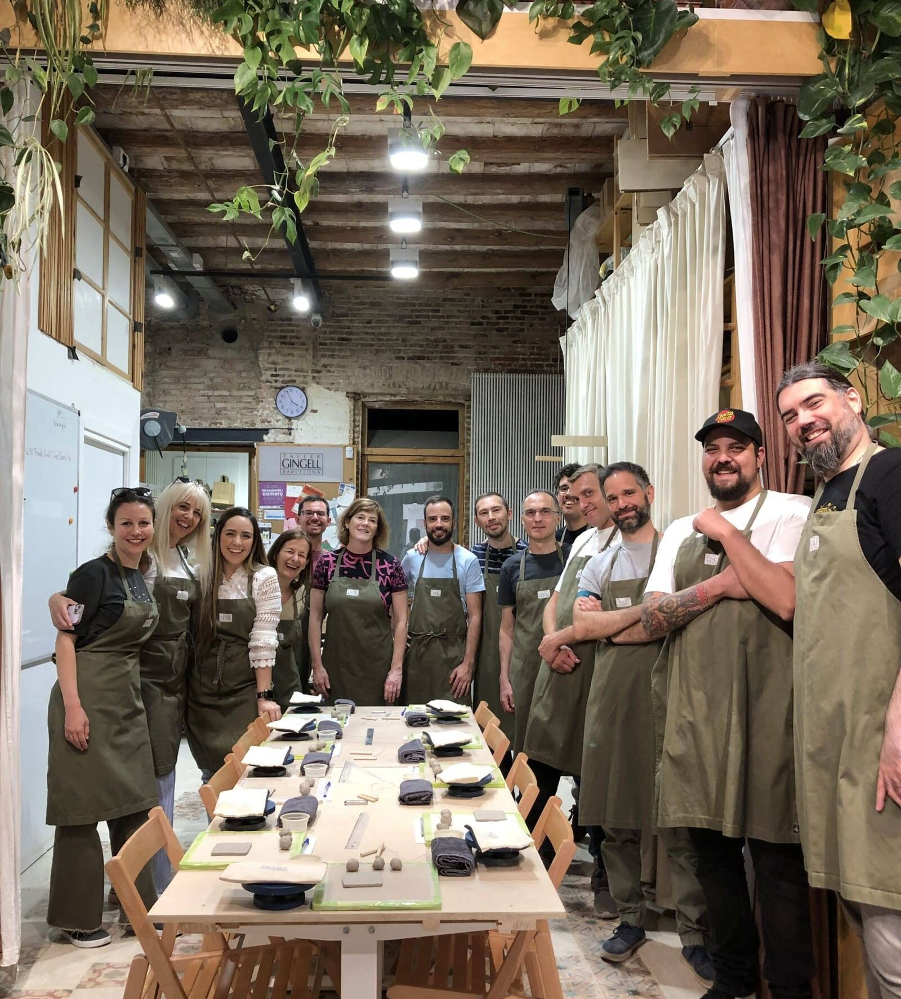
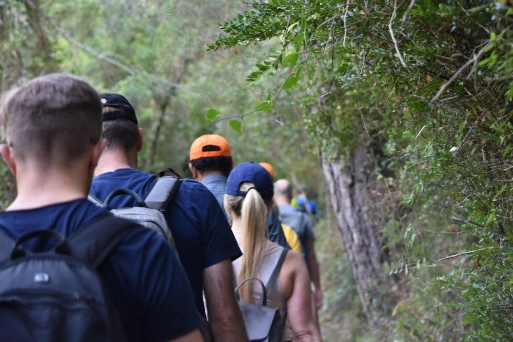
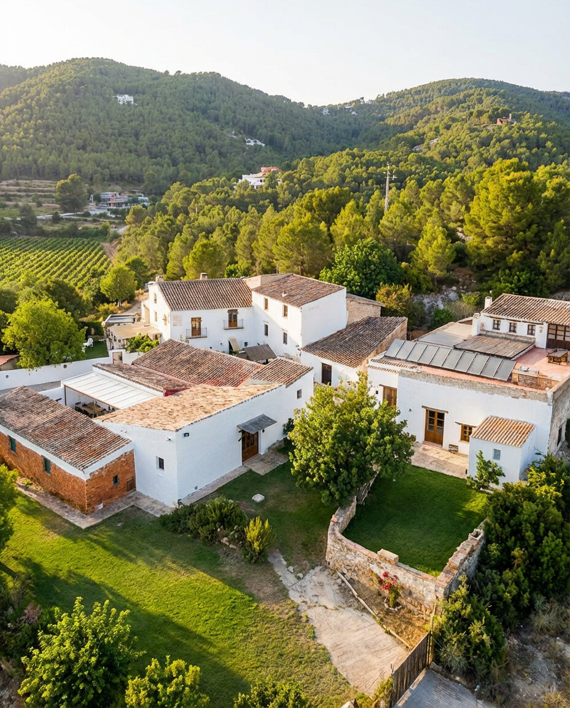
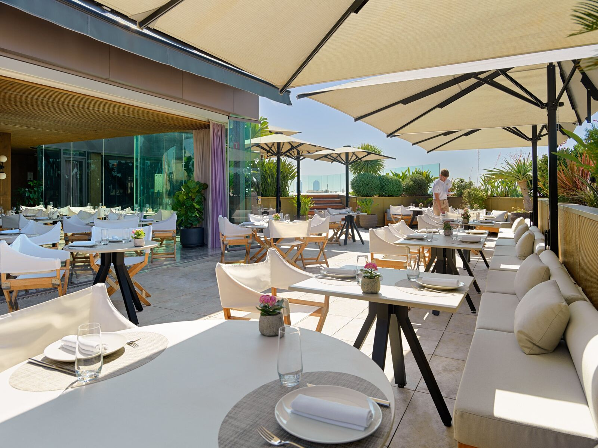
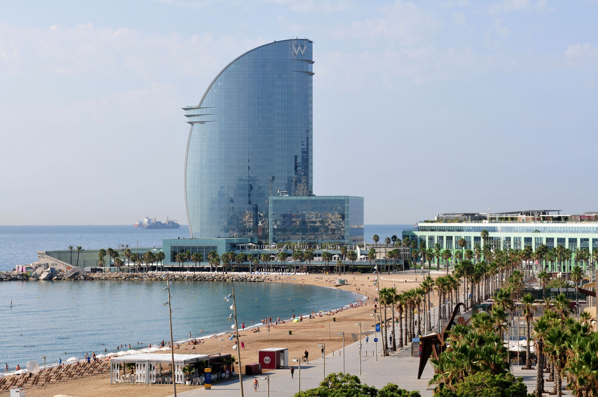
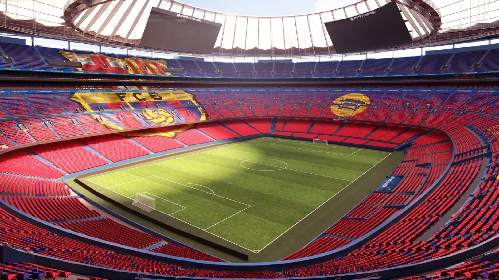
Frequently asked questions
What Chiefs of Staff, People leads, and the CEOs they support ask before submitting a brief: logistics, lead times, pricing, and how we handle friction in the room.
Have a specific requirement or a board deadline?
Talk to a partner directly →Close to none. We run venue buyouts, private chef and sommelier sourcing, dietary curation, on-site Wi-Fi, AV, and airport transfers from Barcelona–El Prat end to end. Your team's time goes into strategic preparation, not logistics.
Six to ten weeks, as a rule. We work with a small set of private venues, historic masias and vineyard estates, and cap capacity at four cohorts a quarter to keep Sven, Farid and Luisa personally facilitating every session. For an urgent founder reset or a post-fundraise mediation, an Urban Atelier sprint in the 22@ district can be arranged inside three weeks.
For cross-functional company offsites (15 to 100 people), we run a dual-track structure: plenary keynotes and company-wide alignment sessions for everyone, alternating with focused working pods led by our wider bench of senior operators. Teams get large-scale cultural connection and rigorous, sprint-style functional work, not one at the expense of the other.
Every engagement ends with a single-page governance artifact: named owners for each strategic bet, what gets deprioritised, and hard review dates. On the Deep Intervention track we add formal 30- and 60-day reviews to check that execution held.
We run confidential 1:1 discovery calls with every executive before arrival, under NDA, and synthesize them into an anonymized friction map, so the tension is addressed as a systemic pattern rather than pointed at a person. In the room, the partners moderate directly: all three have sat in the operator's chair themselves.
Yes. Confidentiality is foundational to how we work. We execute a bilateral NDA before your first 1:1 discovery calls or any strategy decks, board minutes, or friction diagnostics are shared with us.
Facilitation and strategy: a fixed advisory fee covering intake, agenda design, in-room moderation, and the post-offsite review cadence.
Turnkey hospitality: venue buyout, private dining, ground logistics, and curated experiences such as a sunset catamaran, passed through at cost.
Most engagements land between €15,000 and €150,000, depending on cohort size and venue.
We know how much a growth-stage calendar can move. Private estate buyouts are bound by the venue's own terms, but our advisory fees carry flexible rescheduling rights up to 30 days before the offsite. If dates shift, we work to move any deposit to a new window within the same calendar year rather than losing it.
Intake, mediation, and plenary synthesis run natively in English, German, French, Portuguese, and Spanish, so nuance isn't lost in translation on the points that matter most.
Yes. Under the Operator Track we design the split with your Chief of Staff or People lead in advance: we take the hard commercial trade-offs and governance mediation, your team leads the cultural and functional sessions.
Yes, where a sharp external catalyst adds value. While closed-door C-suite resets focus on internal debate, larger leadership cohorts and company-wide offsites often benefit from a targeted keynote to frame macro shifts, AI transformation, or frontier governance. We draw from our proprietary network of European and US operators, serial tech founders, institutional venture partners, and AI researchers across Barcelona's 22@ ecosystem. We do not book generic lecture-circuit speakers; we source operators who align with your specific strategic mandate, conduct pre-offsite briefing calls to align them with your themes, and integrate their sessions directly into functional working pods rather than isolated stage talks.
We build an explicit Day 0 arrival architecture into all multi-day cadences. US West Coast, East Coast, and UK arrivals transfer directly from Barcelona–El Prat (BCN) into private check-in with dedicated downtime. The opening evening is kept to an informal welcome dinner with no heavy governance debates, ensuring Day 1 opens sharp at 09:00 with fully rested leadership teams.
Yes. Every private estate in our portfolio is pre-audited for high-throughput connectivity (redundant fibre or high-speed Starlink feeds), dedicated presentation displays, wireless microphones for plenary sessions, and multiple acoustically isolated rooms for confidential breakout pods and urgent board check-ins.
We run pre-arrival dietary profiling during the intake phase. Dedicated private chefs create parallel, equally elevated menus for vegan, celiac, kosher-style, and allergen-specific needs. For wine tastings and cellar dinners, sommelier pairings include sophisticated non-alcoholic botanical blends and artisanal kombuchas, ensuring total psychological safety and inclusivity with zero awkward peer friction.
We support streamlined international enterprise procurement. European companies with a valid VAT ID receive standard B2B reverse-charge invoices (0% VAT). US corporations (Delaware C-Corps, LLCs) and UK entities are billed under an international Master Services Agreement (MSA), with payment accepted in EUR or USD via international wire or ACH.
Most retreat planners are travel agencies who hand off an agenda, while executive coaches rarely have real P&L experience. We are former founders, CEOs, and fractional CPOs who have raised institutional venture capital, scaled cross-border organisations, and managed restructuring. We combine turnkey Mediterranean luxury hospitality with hard-edged, operator-to-operator commercial and governance mediation.
Operator superpowers. Zero theoretical coaches.
Every retreat and closed-door intervention is personally designed and led by senior operators across executive mediation, product innovation, executive coaching, and organisational governance.
Dr. Sven Mulfinger
Managing Partner · Kuma PartnersSpecialises in high-stakes C-suite mediation, cross-border M&A alignment, and resolving structural co-founder friction. Translates unexpressed executive conflict into single-threaded RACI ownership and binding 90-day execution compacts.
Farid Chaouki
Founder & Strategic Designer · NonameyetGuides scale-ups and distributed leadership teams through rapid product innovation, enterprise AI roadmap stress-testing, and venture architecture. Creates high-tempo sprint environments that convert abstract strategy into validated execution.
Luisa Ábalo
Executive Leadership Chair · Kuma PartnersSpecialises in enterprise governance, organisational scaling architecture, and CEO peer dynamics. Drives operational discipline, accountability cadences, and leadership team cohesion across high-growth international executive cohorts.
Colleen Connors
Senior Advisor · Kuma PartnersFormer CEO and COO, advising VC-backed start-ups and companies with $100M+ revenue. Coaching global leaders for more than 15 years; board member and founder of Coaching Leaders Global.
Prefer a direct conversation?
If your timeline is tight or the situation involves confidential board dynamics, write to a partner directly. No intake form needed.
-
Strict bilateral NDA
Cap table, governance and operational details stay protected from the first conversation.
-
Partner-led from the first reply
No junior sales qualification. You speak with Sven, Farid or Luisa.
-
Reply within 24 business hours
With a first view on your situation and proposed times to talk.
Connect directly
Tell us your group size, target dates and the situation in a few lines.
Email the Partners → contact@kuma.partners